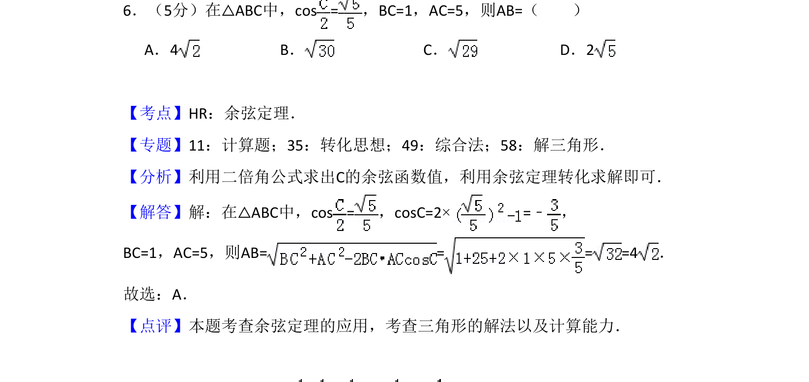
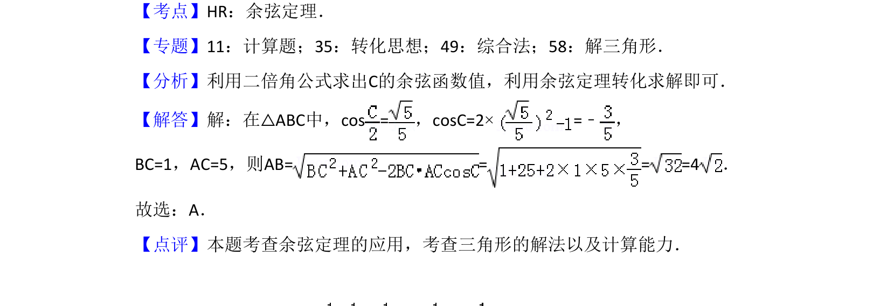

考点：二倍角公式 余弦定理

本题考查三角形中利用二倍角公式求角，再运用余弦定理计算边长。

📄 原 PDF 第 4 页：
素材/真题/吉林/2008-2024·（吉林）数学高考真题/2018年高考数学试卷（理）（新课标Ⅱ）（解析卷）.pdf
6．（5分）在△ABC中，cos =，BC=1，AC=5，则AB=（ ） A．4 B．C．D．2
【考点】HR：余弦定理．菁优网版权所有 【专题】11：计算题；35：转化思想；49：综合法；58：解三角形． 【分析】利用二倍角公式求出C的余弦函数值，利用余弦定理转化求解即可． 【解答】解：在△ABC中，cos =，cosC=2×=﹣ ， BC=1，AC=5，则AB= = = =4． 故选：A． 【点评】本题考查余弦定理的应用，考查三角形的解法以及计算能力．